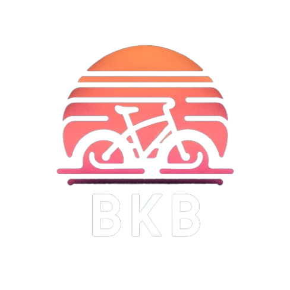

Unit 25 Gretna Gateway Outlet
Village DG16 Gretna Green
01310987654
info@bikekingborders.co.uk
Intermediate Trails
Explore trails for riders with intermediate skills.
Rhyvoan Pass
Rhyvoan Pass climbs 2.6 miles one-way up a rocky doubletrack trail from the small village of Glenmore to the Rhyvoan Bothy at the top. Along the way it passes the beautiful Green Loch, and offers up some excellent scenery! From the top of the pass, there are a few different trail options, including the opportunity to hike-a-bike up Meall a Bhuachaille.
Ciaran Path
Description of Trail 2. This trail provides a slightly more challenging path for those looking to improve their skills.